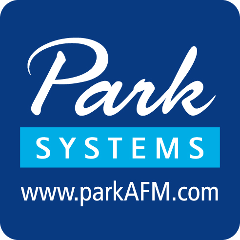
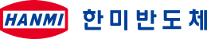

홈 > 브랜드 매거진 > 솔브레인
솔브레인 Soulbrain
솔브레인은 반도체와 디스플레이 공정에 들어가는 식각액, 세정액, 전구체와 이차전지 전해액을 만드는 화학소재 기업이다. 반도체 식각액 분야에서 국내 시장의 80퍼센트 안팎을 차지하며 삼성전자, SK하이닉스를 핵심 고객으로 둔다. 일본이 강하게 쥐고 있던 소재 영역을 국산 기술로 대체해 온 대표적 소부장 강소기업으로, 첨단 공정에 필요한 고순도 화학물질을 양산한다. 미국, 말레이시아, 헝가리 등에 생산 거점을 두고 글로벌 공급망으로 사업을 넓혀 왔다.
산업 분야 기술·전자 · 공개 등급 자료 기반 · 브랜드 평가 4.1 ★
한눈에 보는 브랜드
솔브레인은 반도체와 디스플레이 공정에 들어가는 식각액, 세정액, 전구체와 이차전지 전해액을 만드는 화학소재 기업이다. 반도체 식각액 분야에서 국내 시장의 80퍼센트 안팎을 차지하며 삼성전자, SK하이닉스를 핵심 고객으로 둔다.
일본이 강하게 쥐고 있던 소재 영역을 국산 기술로 대체해 온 대표적 소부장 강소기업으로, 첨단 공정에 필요한 고순도 화학물질을 양산한다. 미국, 말레이시아, 헝가리 등에 생산 거점을 두고 글로벌 공급망으로 사업을 넓혀 왔다.
브랜드 관점
솔브레인은 한국 소재 국산화의 상징으로 거론된다. 2019년 일본이 반도체 핵심 소재 수출을 규제하자 솔브레인은 충남 공주에 액체 불화수소 공장을 세우고 초고순도 제품 양산에 성공했다.
일본 의존도가 높던 품목을 국산 기술로 대체한 가장 성공적인 사례로 평가받으며, 이후 일본산 고순도 불화수소 수입은 크게 줄었다. 소재 한 종목의 공급 차질이 산업 전체를 흔들 수 있다는 점을 보여 주며, 소부장 자립의 가능성을 입증한 기업으로 자리매김했다.
시작과 성장
솔브레인의 뿌리는 1986년 정지완이 세운 무역업체 테크노무역이다. 성균관대에서 화학공학을 전공한 그는 반도체용 화학제품을 수입하는 사업으로 출발했다.
이후 회사는 단순 수입을 넘어 소재를 직접 개발하는 제조기업으로 방향을 틀었고, 1999년 테크노세미켐으로 상호를 바꾸며 식각액과 전자재료 국산화에 집중했다. 2000년 코스닥에 상장했고 2011년 지금의 솔브레인으로 이름을 바꾸었다.
2020년에는 투자부문 솔브레인홀딩스와 사업부문 솔브레인으로 인적분할해 지주회사 체제로 전환했다.
브랜드 아이덴티티
솔브레인은 겉으로 드러나지 않지만 반도체와 디스플레이 제조의 토대가 되는 화학소재를 책임지는 기업으로 스스로를 규정한다. 일본이 앞서 있던 영역을 국산 기술로 따라잡아 온 끈질긴 연구개발 역량, 그리고 첨단 공정에 필요한 극도의 순도를 안정적으로 구현하는 신뢰성을 정체성의 핵심으로 삼는다.
제품과 서비스
주력은 반도체 회로를 깎아 내는 식각액과 표면을 다듬는 세정액이며, 일본 규제 품목이던 고순도 불화수소도 양산한다. 박막 증착에 쓰이는 전구체와 화학적 연마용 슬러리, 구리도금액 등 공정 소재를 폭넓게 공급한다.
디스플레이용 식각액과 박막 필름, 그리고 이차전지 전해액까지 사업 영역을 넓혀 왔다.
현재 상태
솔브레인은 반도체 미세화와 적층 기술 확대에 맞춰 고순도 소재 공급을 늘리고 있다. 식각액 등 주력 사업의 매출이 꾸준히 커졌고, 이차전지 전해액은 미국, 말레이시아, 헝가리 생산 거점을 통해 글로벌 공급으로 확장하고 있다.
BI/CI 변천사
자주 묻는 질문
솔브레인의 브랜드 아이덴티티는 무엇인가요?
솔브레인은 겉으로 드러나지 않지만 반도체와 디스플레이 제조의 토대가 되는 화학소재를 책임지는 기업으로 스스로를 규정한다.
솔브레인의 대표 제품은 무엇인가요?
주력은 반도체 회로를 깎아 내는 식각액과 표면을 다듬는 세정액이며, 일본 규제 품목이던 고순도 불화수소도 양산한다.
솔브레인는 현재 어떤 상태인가요?
솔브레인은 반도체 미세화와 적층 기술 확대에 맞춰 고순도 소재 공급을 늘리고 있다.
솔브레인의 공식 웹사이트는 어디인가요?
솔브레인의 공식 웹사이트는 https://www.soulbrain.co.kr 입니다.
함께 읽을 브랜드
 기술·전자 · 자료 기반삼성전자
기술·전자 · 자료 기반삼성전자삼성전자(Samsung Electronics)는 한국을 대표하는 전자·반도체 기업으로, 인터브랜드 2025 베스트 코리아 브랜드 1위(브랜드 가치 약 122.2조 원...
 기술·전자 · 자료 기반SK하이닉스
기술·전자 · 자료 기반SK하이닉스SK하이닉스(SK Hynix)는 SK그룹 계열의 메모리 반도체 기업으로, 1983년 현대전자로 출발해 2012년 SK그룹에 인수되며 현 사명이 됐다.
기술·전자 · 자료 기반동진쎄미켐동진쎄미켐은 반도체와 디스플레이용 핵심 소재를 만드는 한국의 전자재료 전문기업이다. 일본이 장악하던 감광액(포토레지스트)을 국내에서 처음으로 양산해 소재 국산화의 상...
기술·전자 · 자료 기반리노공업리노공업은 반도체 검사용 테스트 핀과 IC 테스트 소켓을 만드는 부산 기반의 코스닥 상장 기업이다. 자체 브랜드 리노핀과 테스트 소켓이 매출 대부분을 차지하며, 삼성...

기술·전자 · 자료 기반파크시스템스파크시스템스는 원자현미경(AFM)을 핵심으로 하는 한국의 나노 계측 장비 전문 기업이다. 사물을 나노미터 단위로 정밀 측정하는 장비를 연구용과 반도체 산업용으로 공급...
 기술·전자 · 자료 기반삼성SDI
기술·전자 · 자료 기반삼성SDI삼성SDI(Samsung SDI)는 삼성그룹 계열의 2차전지·전자재료 기업으로, 1970년 삼성-NEC로 출발해 1999년 현 사명이 됐다.
기술·전자 · 자료 기반원익IPS원익IPS는 반도체와 디스플레이 제조 공정에 쓰이는 박막 증착·열처리 장비를 만드는 원익그룹 계열 코스닥 상장사다. 화학기상증착과 원자층증착 등 핵심 박막 공정 장비...

기술·전자 · 자료 기반한미반도체한미반도체는 반도체 후공정 장비를 설계·제조하는 인천 기반 코스피 상장사다. 패키지 절단용 마이크로쏘와 검사·분류 장비 비전플레이스먼트로 2000년대 중반부터 세계...